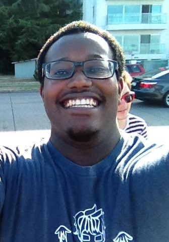

About Me

My name is Devin Broaden and I am currently working to finish up bachelor's degrees in both Software Engineering and Electrical Computer Engineering at Auburn University. While my main focus is on programming and the software aspects of computing, my ambition to be a more well rounded engineer led me to learn about the hardware aspects of computing as well.
Over my five years at Auburn, I have developed a great number of skills and formed powerful connections through my academics, extracurricular programs, and internships. These experiences have helped me better ready myself for the future as I pursue a career in software engineering. I feel that with the rapid development of technology, software engineering is a field whose bounds are constantly expanded and that can only be limited by our imagination.
As a software engineer, I want to change the way that we are able to interact with the world around us through the integration of technology in our everyday lives. After graduating from Auburn University in May of 2015, I will start my career working for Google at their main campus in Mountain View, California.
Resume
(Download)
Internships
Google, Inc |
For the past three summers, I have been interning for Google. I have interviewed at their main campus in Mountain View, California twice, as well as at their Kirkland, Washington office over the most recent summer. My time at Google has by far had the largest impact on my development as a software engineer. As an intern, I was given my own project and I have served on three great teams over my internships.
Internationalization Team (2012)
The purpose of the Internationalization team, or i18n for short, is to facilitate the process of getting all of Google's content translated to all of the languages that Google supports. When I joined the team, they were in the midst of a shift of changing their frameworks from using MySQL to using BigTable. My project was to create the new framework for their suggestions on BigTable. The purpose of suggestions is to allow native speakers at Google to make suggestions for a language when an incorrect translation is discovered. The idea behind this being that if an incorrect translation occurs, it is easier to find a correct translation. My greatest takeaways from this internship were a deeper understanding of databases which I had used minimally before my project, a better exposure to a professional team environment, and an introduction to using a large shared codebase, which were all invaluable to my development.
Chrome OS Testing Team (2013)
When I joined the Chrome OS Testing team, Chrome OS was still relatively new, so it was very exciting to see all of the new top secret Chromebooks before everyone else. My project was to create a web tool that used other Google metrics to find the number of active devices with any given hardware setup. The purpose of my project was to help my team better prioritize their testing efforts based on the number of devices that would be affected by a particular feature. For this project I got to create both the front end and back end of the web server I created, and it was a great introduction for me to web development, which is currently my favorite type of development. My key takeaways from this internship were learning more about front end and back end web development, learning how to integrate internal APIs effectively into my projects, and an introduction to open source programming through Chromium.
Omaha Team (2014)
The Omaha Team is in charge of facilitating Google updates, most importantly for Google Chrome and Chrome OS. This was my first time working at a different office from Google's main campus, but the culture was still very similar. When I first joined the team, I was surprised to find that I had actually worked with some of the people on the team over the previous summer to get Chrome OS metrics for my Chrome OS Testing project. The purpose of my project was to make a web tool for easier tracking, management, and resolution of Omaha specific alerts and incidents. This internship helped me further improve my web development skills from the previous summer and introduced me to using RPC calls for managing data. The main takeaways from this internship were improved overall project planning and design skills and better team collaboration and time management. Of all of my internships, this was arguably my most productive summer.
Savannah River National Laboratory |
This was my first internship, so it was my first introduction to a professional work environment. My assignment was to take surface data points and core samples and create 3D visualizations of the data. I developed a Python script that took in the data points and generated a 3D simulation using a Gaussian distribution to estimate soil values in the surrounding area. The key takeaways from this internship were an introduction to scripting languages and an improved ability to adapt and learn new technologies on the fly.
Projects
PebbleGame
(source)
A class project for an introduction into Artificial Intelligence. The board is divided between two rows, the top row and the bottom row, with a variable number of columns. Each block in a player's row has a number which represents the number of pebbles in that block. On each player's turn, they must select a block and then remove all of its pebbles and distribute them one at a time in the other blocks in a clockwise motion. A player wins when their opponent has no pebbles left in their squares.
PianoMate
(source)
The code to operate the microcontrollers of my Electrical Senior Design project. Our project is a self playing keyboard that is supposed to easier facilitate one's learning to play the piano. We created electromagnets to pull down the individual keys of the board as well as LEDs to specify whether a user is pressing a correct or incorrect key. The microcontrollers are connected in a master-slave hierarchy that controls the electromagnets and LEDs.
Ranking
(source)
An unfinished project, the goal was to make a system that used allowed users to compare two items at a time and then rank all of the objects compared with a sort of ELO rating system. The idea behind it was that if someone was given a large number of objects in a list and asked to rank them it would be difficult, but if they were given the objects two at a time and just had to compare the two, it would be much easier to generate a ranking of all of the items.